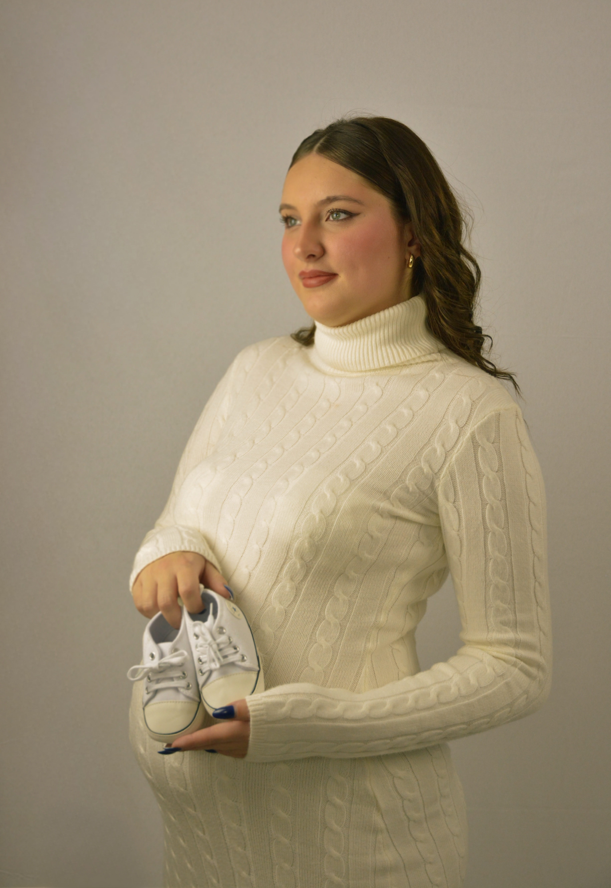
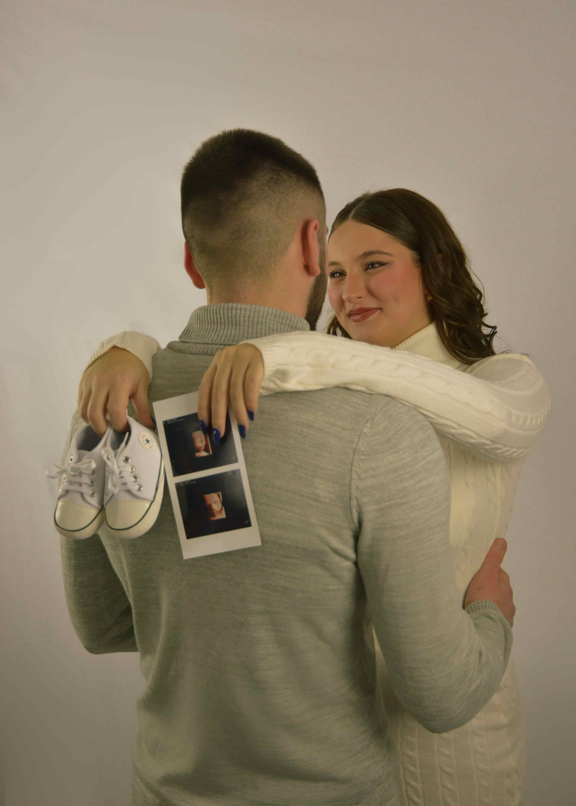
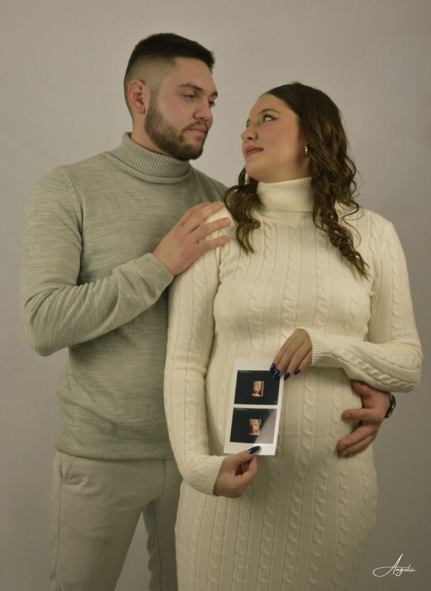
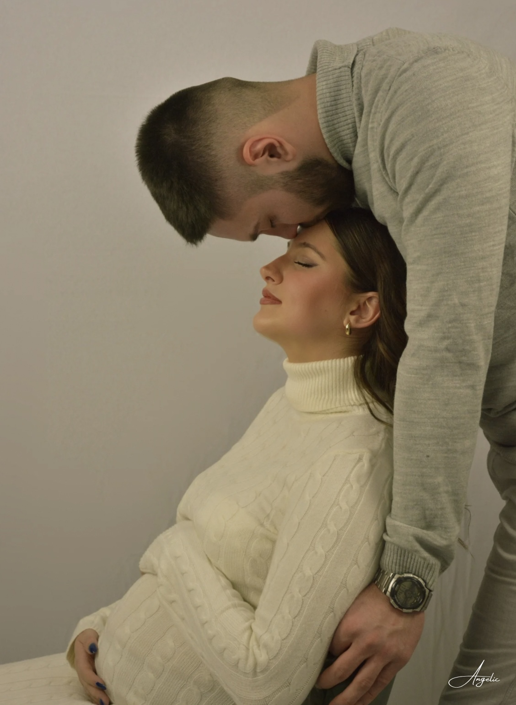
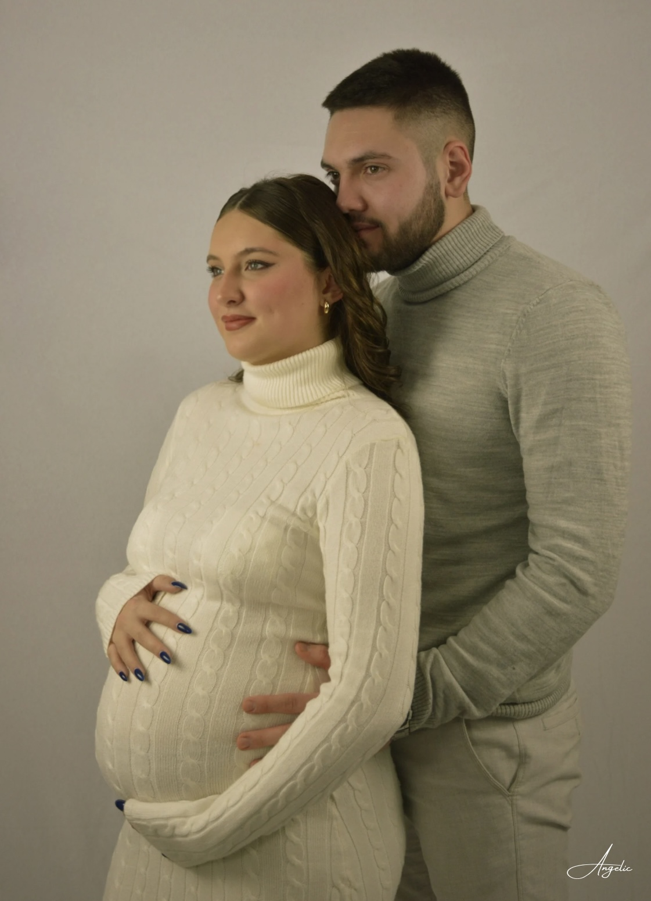

Fotografisanje trudnica
Nežne, emotivne fotografije koje zauvek čuvaju najlepši period vašeg života.
U studiju u Pančevu, na vašoj kućnoj adresi, ili na vašoj omiljenoj lokaciji u Beogradu, Novom Sadu i celoj Srbiji.
Svaki trenutak trudnoće je čaroban
Trudnoća je jedno od najlepših poglavlja u životu - puno iščekivanja, ljubavi i nežnosti. Moje fotografije su tu da uhvate tu magiju i sačuvaju je zauvek. Fotografišem buduće mame u Pančevu, Beogradu, Novom Sadu i širom Srbije.
Svaka sesija počinje opušteno - sednemo, popričamo, upoznamo se i tek kad se osećate potpuno prijatno, polako prelazimo na slikanje. Nema žurbe, nema stresa - samo vi, vaš stomačić i predivne emocije.
- 30 profesionalno obrađenih fotografija
- Opuštena sesija u vašem tempu, bez žurbe
- Pomoć oko izbora odeće i poza
- Ručna obrada svake fotografije
- Gotove slike za 5-7 radnih dana

Kako izgleda foto sesija?
Od prvog kontakta do gotovih fotografija - sve je osmišljeno da bude bez stresa i puno uživanja. Radim sa trudnicama u Pančevu, Beogradu, Novom Sadu i celoj Srbiji.
Konsultacija i dogovor
Javite mi se putem kontakt forme ili telefona. Razgovaramo o vašim željama, biramo lokaciju - studio u Pančevu, park u Beogradu, priroda kod Novog Sada ili neka vaša omiljena lokacija - i dogovaramo termin.
Priprema
Dobijate vodič za pripremu - šta obući, kako se pripremiti i šta očekivati.
Sesija i slikanje
Kad dođete, prvo sednemo, popijemo kafu, opustite se i ispričamo se. Tek kad se osećate prijatno, polako prelazimo na slikanje. Vodim vas kroz poze, bez ikakve žurbe.
Obrada i dostava
Svaka fotografija prolazi pažljivu ručnu obradu. Za 5-7 radnih dana dobijate gotove slike u visokoj rezoluciji putem online galerije.
Galerija trudničkih fotografija
Svaka fotografija priča priču o ljubavi, iščekivanju i lepoti materinstva. Fotografije nastale u studiju u Pančevu i na lokacijama u Beogradu i Novom Sadu.








„Anđela je neverovatna! Bilo me je strah kako ću izgledati na slikama, ali me je opustila od prvog trenutka. Fotografije su prelepe i nežne - tačno onako kako sam zamišljala. Svaka preporuka za sve buduće mame!"
Transparentne cene, bez skrivenih troškova
Izaberite paket koji vam najviše odgovara. Svaki paket uključuje profesionalnu obradu i digitalne fotografije visoke rezolucije.
Studio sesija
U studiju u Pančevu
- 20 profesionalno obrađenih fotografija
- Opuštena sesija u vašem tempu
- Ručna obrada svake slike
- Pomoć pri poziranju
- Digitalna dostava u HD rezoluciji
- Gotove fotografije za 5-7 dana
Moguća i lokacija po izboru uz dodatne putne troškove
Proširena sesija
Studio ili lokacija po izboru
- 30 profesionalno obrađenih fotografija
- Više promena outfita
- Opuštena sesija u vašem tempu
- Pomoć pri poziranju
- Partner i deca dobrodošli
- Ekspresna obrada - gotovo za 5 dana
Za lokacije van studija dodatno se obračunavaju putni troškovi
Premium paket
Kompletno iskustvo
- 40 profesionalno obrađenih fotografija
- Studio i/ili lokacija po izboru
- Neograničen broj promena outfita
- Partner i deca uključeni
- Ekspresna obrada - gotovo za 2 dana
- 5 štampanih fotografija 20x30cm
Za lokacije van studija dodatno se obračunavaju putni troškovi
Sve što želite da znate
Odgovori na najčešća pitanja o trudničkom fotografisanju. Ako imate dodatna pitanja, slobodno me kontaktirajte!
Koja je idealna nedelja trudnoće za fotografisanje?
Idealno vreme za trudničko fotografisanje je između 28. i 36. nedelje trudnoće. U tom periodu stomak je lepo zaobljen, a buduća mama se još uvek oseća dovoljno udobno za poziranje. Naravno, svaka trudnoća je različita - javite mi se što ranije da rezervišemo termin u idealnom periodu.
Koliko traje foto sesija za trudnice?
Ne ograničavamo vreme! Kad dođete, prvo sednete, opustite se, popijemo kafu ili čaj, ispričamo se i upoznamo. Tek kad se osećate potpuno opušteno, polako prelazimo na slikanje. Ceo doživljaj obično traje oko 2 sata, ali nema nikakve žurbe - vaša udobnost mi je najbitnija. Fotografišem trudnice u Pančevu, Beogradu, Novom Sadu i širom Srbije.
Šta da obučem za trudničko fotografisanje?
Preporučujem lagane, jednobojne haljine u nežnim tonovima - bela, bež, puder roze, svetlo plava ili lavanda. Dugačke, lepršave haljine daju najlepši efekat na fotografijama. Ako radimo crno-bele fotografije, i crne haljine mogu dati predivan kontrast. Pre sesije ću vam poslati detaljan vodič sa preporukama!
Da li partner i starija deca mogu da budu na fotografisanju?
Naravno! Porodične trudničke fotografije su predivne i posebno emotivne. Partner i starija deca su više nego dobrodošli - te zajedničke fotografije su često omiljene kod mojih klijenata. Cena ostaje ista.
Koliko fotografija dobijam i u kom formatu?
U baznom paketu dobijate 20 profesionalno obrađenih fotografija, u proširenom 30, a u premium paketu čak 40 fotografija - sve u digitalnom formatu (JPEG, visoka rezolucija). Svaka slika je ručno obrađena sa posebnom pažnjom na tonove kože i nežnu estetiku. Fotografije su pogodne za štampanje do velikih formata.
Da li radite fotografisanje na otvorenom?
Da! Fotografisanje na otvorenom je prelepo, posebno tokom zlatnog sata (sat pre zalaska sunca). Možemo raditi u parku, u prirodi, pored reke ili na bilo kojoj lokaciji po vašem izboru - u Pančevu, Beogradu, Novom Sadu ili bilo gde u Srbiji. Za lokacije van Pančeva važi dodatna naknada za putne troškove - pogledajte cenovnik za detalje.
Kako da se pripremim za fotografisanje?
Pre sesije ćete dobiti detaljan vodič! Ukratko: naspavajte se, hidrirajte se, šminku držite blagom i prirodnom. Ponesite udobnu odeću za dolazak i komplete za fotografisanje. A najvažnije - opustite se i uživajte. Ja sam tu za sve ostalo! 🤍
Spremni ste za vaše trudničke fotografije?
Bilo da ste u Pančevu, Beogradu, Novom Sadu ili bilo gde u Srbiji - javite mi se i zakazujemo termin koji vam odgovara. Jedva čekam da uhvatimo ove predivne trenutke zajedno!